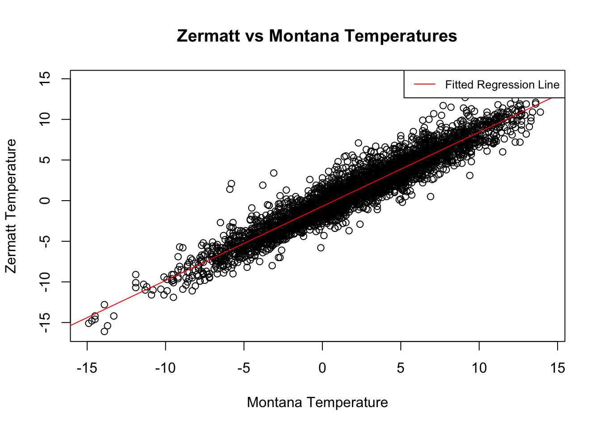

Registered S3 method overwritten by 'quantmod':
method from
as.zoo.data.frame zoo
Attaching package: 'dplyr'
The following objects are masked from 'package:stats':
filter, lag
The following objects are masked from 'package:base':
intersect, setdiff, setequal, union
Loading required package: gsl
Loading required package: Matrix
Loading required package: mvtnorm
Loading required package: numDeriv
Loading required package: timeSeries
Loading required package: timeDate
Attaching package: 'QRM'
The following object is masked from 'package:base':
lbeta
Loading required package: ggplot2
Warning: package 'ggplot2' was built under R version 4.3.1
Attaching package: 'plotly'
The following object is masked from 'package:ggplot2':
last_plot
The following object is masked from 'package:timeSeries':
filter
The following object is masked from 'package:stats':
filter
The following object is masked from 'package:graphics':
layout
Attaching package: 'MASS'
The following object is masked from 'package:plotly':
select
The following object is masked from 'package:dplyr':
select
Loading required package: carData
Attaching package: 'car'
The following object is masked from 'package:dplyr':
recode
Warning: package 'fGarch' was built under R version 4.3.1
NOTE: Packages 'fBasics', 'timeDate', and 'timeSeries' are no longer
attached to the search() path when 'fGarch' is attached.
If needed attach them yourself in your R script by e.g.,
require("timeSeries")
Attaching package: 'fGarch'
The following object is masked from 'package:TTR':
volatility
Loading required package: mgcv
Loading required package: nlme
Attaching package: 'nlme'
The following object is masked from 'package:forecast':
getResponse
The following object is masked from 'package:dplyr':
collapse
This is mgcv 1.8-42. For overview type 'help("mgcv-package")'.
Attaching package: 'ismev'
The following objects are masked from 'package:QRM':
gamGPDboot, gamGPDfit, GPD.predict
Warning: package 'VGAM' was built under R version 4.3.1
Loading required package: stats4
Loading required package: splines
Attaching package: 'VGAM'
The following object is masked from 'package:mgcv':
s
The following object is masked from 'package:car':
logit
The following objects are masked from 'package:gsl':
erf, erfc, hzeta, zeta
── Attaching core tidyverse packages ──────────────────────── tidyverse 2.0.0 ──
✔ forcats 1.0.0 ✔ stringr 1.5.0
✔ lubridate 1.9.2 ✔ tibble 3.2.1
✔ purrr 1.0.2 ✔ tidyr 1.3.0
✔ readr 2.1.4
── Conflicts ────────────────────────────────────────── tidyverse_conflicts() ──
✖ nlme::collapse() masks dplyr::collapse()
✖ tidyr::expand() masks Matrix::expand()
✖ plotly::filter() masks timeSeries::filter(), dplyr::filter(), stats::filter()
✖ timeSeries::lag() masks dplyr::lag(), stats::lag()
✖ tidyr::pack() masks Matrix::pack()
✖ car::recode() masks dplyr::recode()
✖ MASS::select() masks plotly::select(), dplyr::select()
✖ purrr::some() masks car::some()
✖ tidyr::unpack() masks Matrix::unpack()
ℹ Use the conflicted package (<http://conflicted.r-lib.org/>) to force all conflicts to become errors
Attaching package: 'scales'
The following object is masked from 'package:plotrix':
rescale
The following object is masked from 'package:purrr':
discard
The following object is masked from 'package:readr':
col_factor
Loading required package: Lmoments
Loading required package: distillery
Attaching package: 'extRemes'
The following object is masked from 'package:VGAM':
logistic
The following objects are masked from 'package:stats':
qqnorm, qqplot
Warning: package 'knitr' was built under R version 4.3.1
Loading required package: zoo
Attaching package: 'zoo'
The following object is masked from 'package:timeSeries':
time<-
The following objects are masked from 'package:base':
as.Date, as.Date.numeric
######################### Warning from 'xts' package ##########################
# #
# The dplyr lag() function breaks how base R's lag() function is supposed to #
# work, which breaks lag(my_xts). Calls to lag(my_xts) that you type or #
# source() into this session won't work correctly. #
# #
# Use stats::lag() to make sure you're not using dplyr::lag(), or you can add #
# conflictRules('dplyr', exclude = 'lag') to your .Rprofile to stop #
# dplyr from breaking base R's lag() function. #
# #
# Code in packages is not affected. It's protected by R's namespace mechanism #
# Set `options(xts.warn_dplyr_breaks_lag = FALSE)` to suppress this warning. #
# #
###############################################################################
Attaching package: 'xts'
The following objects are masked from 'package:dplyr':
first, last
Attaching package: 'kableExtra'
The following object is masked from 'package:dplyr':
group_rows
Attaching package: 'gridExtra'
The following object is masked from 'package:dplyr':
combine
Attaching package: 'evd'
The following objects are masked from 'package:extRemes':
fbvpot, mrlplot
The following objects are masked from 'package:VGAM':
dfrechet, dgev, dgpd, dgumbel, pfrechet, pgev, pgpd, pgumbel,
qfrechet, qgev, qgpd, qgumbel, rfrechet, rgev, rgpd, rgumbel,
venice
The following object is masked from 'package:car':
subsets
Attaching package: 'data.table'
The following objects are masked from 'package:xts':
first, last
The following objects are masked from 'package:lubridate':
hour, isoweek, mday, minute, month, quarter, second, wday, week,
yday, year
The following object is masked from 'package:purrr':
transpose
The following objects are masked from 'package:dplyr':
between, first, last
Part 1
(a) Read in the data and select only the winter temperature data. You can use the code lines of the file GetData.R to get the data and select only the winter values.
##### Download daily NAO measurementsNAO.daily <-fread('ftp://ftp.cdc.noaa.gov/Public/gbates/teleconn/nao.reanalysis.t10trunc.1948-present.txt')NAO.daily <-as.matrix(NAO.daily)colnames(NAO.daily) <-c("year","month","day","NAO")##### Download temperature data: be sure to work in the correct directorymonths <-c(12,1,2) #keep only winter observationstemp_max_Zermatt <-read_delim(here::here("data/practical_3/daily_maximum_Zermatt/order_107669_data.txt"), ";", escape_double =FALSE, col_types =cols(time =col_number()), trim_ws =TRUE, skip =1)colnames(temp_max_Zermatt) <-c("station","time","temp")temp_max_Zermatt <- temp_max_Zermatt[-1,]temp_max_Zermatt[,2] <-as.Date(apply(temp_max_Zermatt[,2],1,as.character),"%Y%m%d")temp_max_Montana <-read_delim(here::here("data/practical_3/daily_maximum_Montana/order_107668_data.txt"), ";", escape_double =FALSE, col_types =cols(time =col_number()), trim_ws =TRUE, skip =1)colnames(temp_max_Montana) <-c("station","time","temp")temp_max_Montana <- temp_max_Montana[-1,]temp_max_Montana[,2] <-as.Date(apply(temp_max_Montana[,2],1,as.character),"%Y%m%d")###match the dates of the two time seriestemp_max_Montana <- temp_max_Montana[match(as.matrix(temp_max_Zermatt[,2]),as.matrix(temp_max_Montana[,2])),]temp_max_Montana <-as.matrix(temp_max_Montana)colnames(temp_max_Montana) <-c("station","time","temp")temp_max_Zermatt <-as.matrix(temp_max_Zermatt)colnames(temp_max_Zermatt) <-c("station","time","temp")###keep only winter datestemp_max_Montana <- temp_max_Montana[which(month(as.POSIXlt(temp_max_Montana[,"time"], format="%Y-%m-%d")) %in% months),]temp_max_Zermatt <- temp_max_Zermatt[which(month(as.POSIXlt(temp_max_Zermatt[,"time"], format="%Y-%m-%d")) %in% months),]Date <-function( length =0 ){ newDate =numeric( length )class(newDate) ="Date"return(newDate)}season_day <-yday(as.Date(temp_max_Montana[,2]))season_day[season_day <61] <- season_day[season_day <61] +31season_day[season_day >334] <- season_day[season_day >334]-334NAO.date <-Date(nrow(NAO.daily))for(i in1:nrow(NAO.daily)){ NAO.date[i] <-as.Date(paste(as.character(NAO.daily[i,1]),"-",as.character(NAO.daily[i,2]),"-",as.character(NAO.daily[i,3]),sep=""),format="%Y-%m-%d")}nao <- NAO.daily[intersect(as.Date(temp_max_Montana[,2]),as.Date(NAO.date)),4]#Montanax_Montana <-data.frame("time"=temp_max_Montana[,2],"nao"=nao,"d"=season_day,"temp"=temp_max_Montana[,3])as.numeric.factor <-function(x) {as.numeric(levels(x))[x]}x_Montana[,"temp"] <-as.numeric(x_Montana[,"temp"])x_Montana[,"time"] <-as.numeric(year(as.POSIXlt(x_Montana[,"time"], format="%Y-%m-%d")))x_Montana[,"time"] <- (x_Montana[,"time"]-min(x_Montana[,"time"]))/(max(x_Montana[,"time"])-min(x_Montana[,"time"]))#Zermattx_Zermatt <-data.frame("time"=temp_max_Zermatt[,2],"nao"=nao,"d"=season_day,"temp"=temp_max_Zermatt[,3])as.numeric.factor <-function(x) {as.numeric(levels(x))[x]}x_Zermatt[,"temp"] <-as.numeric(x_Zermatt[,"temp"])x_Zermatt[,"time"] <-as.numeric(year(as.POSIXlt(x_Zermatt[,"time"], format="%Y-%m-%d")))x_Zermatt[,"time"] <- (x_Zermatt[,"time"]-min(x_Zermatt[,"time"]))/(max(x_Zermatt[,"time"])-min(x_Zermatt[,"time"]))Z <-data.frame("Montana"=x_Montana[,"temp"] , "Zermatt"=x_Zermatt[,"temp"], "NAO"=x_Zermatt[,"nao"])
(b) Represent the data and especially scatterplots of Zermatt values against Montana’s values. Same with Montana values against NAO values. Comment.
# Scatterplot of Zermatt values against Montana valuesplot(Z$Montana, Z$Zermatt, xlab ="Montana Temperature", ylab ="Zermatt Temperature", main ="Zermatt vs Montana Temperatures")abline(lm(Z$Zermatt ~ Z$Montana), col ="red") legend("topright", legend ="Fitted Regression Line", col ="red", lty =1, cex =0.8)

# Scatterplot of Montana values against NAO valuesplot(Z$Montana, Z$NAO, xlab ="Montana Temperature", ylab ="NAO Index", main ="Montana Temperature vs NAO Index")abline(lm(Z$NAO ~ Z$Montana), col ="red") # Add a linear regression linelegend("topright", legend ="Fitted Regression Line", col ="red", lty =1, cex =0.8)
Zermatt vs Montana Temperatures: scatterplot displays a discernible pattern, indicating a positive correlation between the temperatures in Zermatt and Montana. The red line, which delineates the linear regression model applied to the data, closely follows the trajectory of the data points. This suggests a robust positive linear association between the temperatures recorded in the two regions.
Montana Temperature vs NAO Index: scatterplot presents a dense concentration of data points that do not exhibit a clear directional trend. The red line, which represents the fitted linear regression model, appears to be horizontal, suggesting little to no linear relationship between the temperature in Montana and the NAO Index. The lack of a slope in the regression line implies that, based on this model, changes in the NAO Index do not correspond to predictable or significant changes in Montana’s temperature. This could indicate that the NAO Index may not be a strong predictor of temperature in Montana, or that a linear model is not the most appropriate for this data set.
(c) Test the correlation between these two pairs of series.